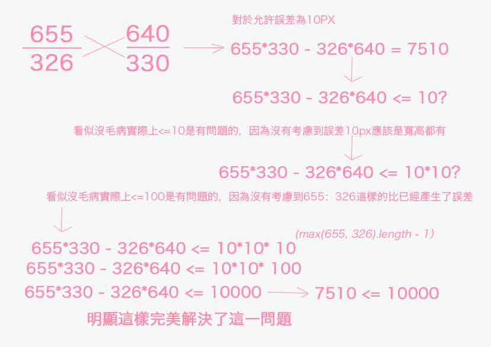

圖片上傳以及裁剪后校驗算法
看到這樣的標題，是不是嚇了一跳？請不要被嚇到，這個其實並沒有那麼複雜，一步一步分析即可得出答案。最開始我也是很頭大這件事情。
最開始，也是從三月份接手了別人的項目，他們運用了php模板做前端開發的，最後再把對應的模板手動轉成java的velocity模板，看到這裡是不是想罵娘？臥槽，坑爹啊，還轉換一次，而且是手動的，裡面寫的各種組件也是一塌糊塗；然後這一版本在大概7 8月份的被我們這邊的FE團隊搞成了vue的模式開發了，這樣優化了前端的開發模式，好了不止5倍，提高的開發效率不止5倍，並且bug明顯收斂了很多很多，但是圖片裁剪的校驗，尤其是寬高比校驗還是存在小範圍的bug；到了10月份，有幸繼續優化這個組件，已經完全解決了這個bug;而後到了12月份，這個項目終於死掉了，歡呼 ~~ ，臥槽，是不是太那啥了，本來就是啊，每次都是倒排，RD和FE根本沒有發言權，PM說什麼時間就是什麼時間，直接對外發佈時間，去他個爺的，這樣的模式下，DuangDuangDuang~~bug又開始擴散了，什麼亂七八糟的bug一起出現，兼容性，UI層的，總之是應有盡有。試問這樣的壓縮時間，為了完成基本功能，能不出這麼多亂七八糟的bug麼。怪我咯~~後面小夥伴們又做了一個圖片上傳的組件，就只是圖片上傳到現在kb數校驗等等都沒做，只做了是否有圖片校驗，有幸的是又是我來做的圖片裁剪以及校驗~~嗚啦啦啦
這裡總結下圖片上傳以及裁剪校驗的經歷，看似簡單，實則複雜度精確度蠻高的，現在來說校驗寬高比還是處於精確度在95%之間。
3月份第一版：
使用的uploader上傳圖片，和jq的copper裁剪圖片倆大插件，其實用什麼插件并不影響，關鍵是開發的人能不能完美控制它，就好比用劍的人，不能控制好，一定會自傷的。
其中未控制好的點：
上傳完成圖片后直接塞到dom節點上，綁定各種數據到標籤上，進行後續處理，一旦大聲錯誤影響這張圖片的後續操作，比如說圖片未加載完成，Kb數寬高，URL。直接放在標籤上後續得到的就是錯的，一錯百錯；
圖片上傳是異步的，當上傳完成后，針對一組圖片列表。進行裁剪，裁剪插件得到的圖片會發生串圖，但實際傳到後端的圖片url又是正常的，最後裁剪圖片必然出錯；
回寫頁面中的圖片，無法進行再次裁剪，因為標籤上沒有綁定裁剪所需要的參數；
裁剪、上傳過程中允許調換圖片順序，採用這樣的開發方式，又會使得圖片源數據無法得到良好的正確控制，導致bug必現，而且還難改。
記得有一次改到深夜，實在是改不動了，還是老大（博士）一起看的，但是到了第二天可惡的bug又莫名其妙的回來了，這個簡直是我的噩夢！！！
等等....
造成這些的原因無外乎就是太依賴標籤上的參數，假如一個懂開發的小夥子手動改了，必然會出錯的。
7月份第二版：
這一版是波波大神做的，明顯良好的控制了功能性的bug復現，使得圖片上傳再也沒有出現過bug，裁剪也沒有，唯一出的是後端在裁剪png圖片時候會丟失B色調（藍色），導致圖片變紅，當然部署前端bug。還有就是後期10月份出現的當寬高比約等於2：1（比如說：655：326），這樣的比例時，會出現無論怎麼裁剪都會不滿足裁剪寬高比的。
10月份第三版：
上面說過這一bug了，出現這一bug的原因是：
使用了除法產生了很多小數部分，比如：655：326 == 2.0092024539877302 ≈ 2：1 == 2嘛,這樣一來，小數部分乘以實際上百的px和上百的比655、326得到的誤差就會是好幾百的px數，所以這一bug必現。
最後我把他換成了乘法和減法的算術完美解決了這一bug，
看下簡單的實現方式：
/**
* compareTwomultiplication 利用乘法做图片宽高容差处理
*
* @param {type} w 宽
* @param {type} h 高
* @param {type} aspectRatio 宽高比
* @param {type} deviation 误差，这里默认10
*
* @return {Boolen} 返回是否符合要求,符合返回false,否则true
*/
compareTwomultiplication: function (w, h, aspectRatio, deviation) {
if (!!deviation && deviation !== 0) {
deviation = 10;
}
// 误差计算的分母
var denominator = Math.pow(10, this.getDecimalsFigures(aspectRatio));
// 误差计算后的分子
var numerator = denominator * aspectRatio;
// 需要/误差计算的分母，回歸到原始誤差
return (Math.abs(w * denominator - h * numerator) / denominator > deviation);
}
12月份新項目第一版
這次有幸的是裁剪組件完全有我自己控制，裡面相對於前面最優版本，其實還有大坑存在；
隱性大坑：
裁剪后傳入後端的寬高必然存在小數部分，而後端處理的方式既不是四捨五入法，又不是動態根據其中一個為基準通過寬高比計算另一個的值。
當出現
655：326 == 2.0092024539877302 ≈ 2：1 == 2這樣的比例時（出現這樣的比例完全是運營嚇配置，但是又是自己程序不嚴謹連這樣的都處理不好，所以還是的處理）又會出現誤差很大，大到交叉相乘后再相減到成百上千；同理根據經驗還是繼續使用上一版本的交叉乘減法；針對第一點，原本後端應該處理好的，應該是根據一個為基準結合寬高比得到正確的另一個整數PX數；既然後端偷懶做不了，那麼我大前端做好了傳給他，偷懶就偷懶吧，大前端就是牛！！！
思路：(系統允許有10px的誤差，我也是這麼認為的)
1.乘減法比除法得到的寬高比更精確更易控制。計算機處理除法不是那麼好控制；
以寬高比為655：326實際得到的圖片寬高為640/330，
實際上剛好是640/320剛好滿足2：1的比例，存在10px的誤差；
首先：
655/326 = 2.0092024539877302
640/330 = 1.9393939393939394
他們之間已經算是符合要求了。
2.不使用除法比進行比較，因為不好控制，而且小數部分人眼看覺得接近了，但是機器不知道，不好進行算術得到；請看下圖：

關於校驗問題解決了，其實現在已經解決問題了，為了完美，我們的看看後端沒有解決的問題，前端來做：
當裁剪出來的比例有小數的時候（必然有小數）
使用其中一個值為基準計算另一個值，
1). 為基準的值，選用：誰的小數部分剛好為0（都為0時使用寬為基準）或者誰的小數大，當都存在小數時，以小數大的進行四捨五入法修正基準px量；
2). 當選取基準整數PX值后根據給出的比例（例如655：326）進行計算另一個PX值，這個計算出來的值有可能（很大幾率是有小數的），那麼簡單起見，直接四捨五入法得到整數PX值（其實應該動態的使用夾逼定理圈定出剛好符合寬高比的整數值，但是配置的寬高比太奇葩，根本不可能得到整數值，並且剛開始在做校驗時已經做好了兼容，對於現在這麼一點點誤差是可以計算出來的），所以這樣已經很接近真實比例了；
第二小點就不畫圖說明了，直接上代碼：
/**
* setIntWH 設置整數寬高
*
* @param {object} data 返回計算后的最近姐的整數寬高
*/
setIntWH: function (data) {
var me = this;
var cropData = this.cropData;
// 去除自由裁剪則直接返回data;
var aspectRatio = cropData.checkedRatio;
if ( String(aspectRatio) === 'NaN' || !aspectRatio) {
return data;
}
var wRatio;
var hRatio;
if (!!aspectRatio) {
var temp = aspectRatio.split(':');
wRatio = Number(temp[0]);
hRatio = Number(temp[1]);
}
// 寬的小數部分
var wFixed = util.getToFixed(data.w);
// 高的小數部分
var hFixed = util.getToFixed(data.h);
// 開始算術....
// 如果高為整數，那麼說明寬高都已經符合了
if (wFixed === 0 && hFixed === 0) {
return data;
}
// 如果都不為0 誰大以誰為標準,提到前面手動設置為0;
// 不過為了更精準，需要採用四捨五入法
if (wFixed >= hFixed && hFixed !== 0) {
wFixed = 0;
data.w = Math.round(data.w);
}else if (wFixed < hFixed && wFixed !== 0) {
hFixed = 0;
data.h = Math.round(data.h);
}
// 開始以標準進行算術
if (wFixed === 0) {
// 如果寬的小數部分為0，則以寬為標準計算高的整數上下兼容
data.h = this.calculateInt(data.w, hRatio / wRatio);
}else if (hFixed === 0) {
// 如果高的小數部分為0，則以高為標準計算寬的整數上下兼容
data.w = this.calculateInt(data.h, wRatio / hRatio);
}
return data;
}
/**
* calculateInt 以某一整數以及比例為標磚計算另一邊的整數
*
* @param {number} n 基准數字
* @param {number} radio 比例尺
*
* @return {number} 計算的整數數字
*/
calculateInt: function (n, radio) {
var results = n * radio;
// 為了更加精確，將整數部分 + 小數部分乘以比例，採用四捨五入法
// 這樣做是兼容，當比例極大時，小數部分是不可以截取的
// 截取2為小數是因為：比例一版還是不會超過 100:1 的
results = ~~results + Math.round(util.getToFixed(results, 2) * radio);
return results;
}
util.js中的的getTofixed方法
/**
* getToFixed 獲取指定位數的小數部分
*
* @param {number} n 傳入的數字
* @param {number} digit 需要截取的小數位數
*
* @return {number} 返回截取的指定位數的小數部分
*/
getToFixed(n, digit = 4) {
return Number((n - ~~n).toFixed(digit));
}
到此，圖片的裁剪算法原理就算是說明白了，不清楚的請在github上聯繫我

微信打賞

支付寶打賞